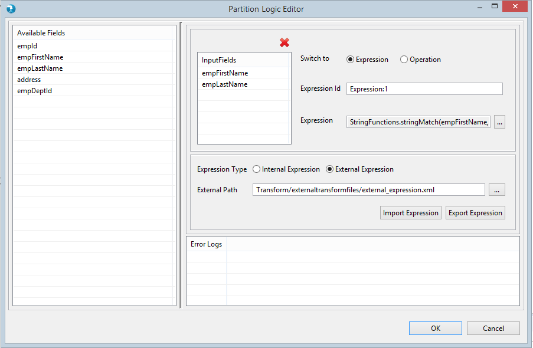
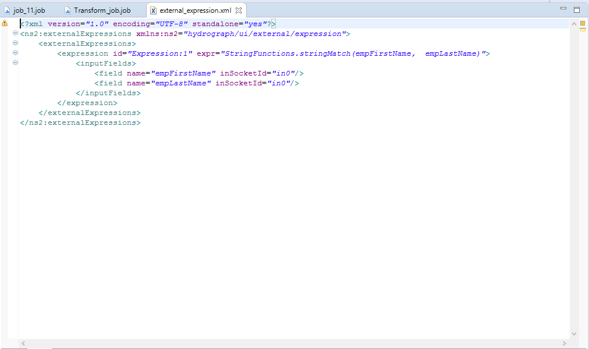
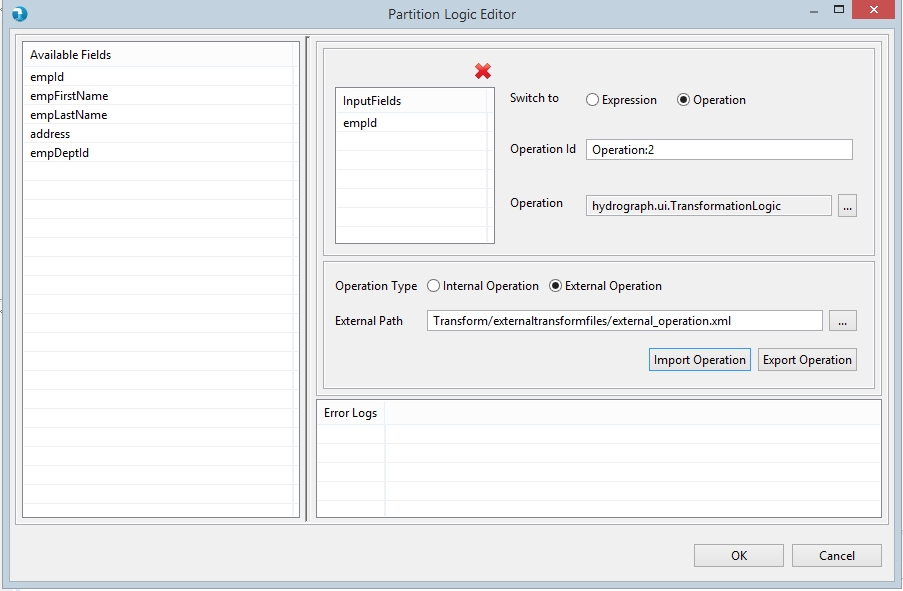
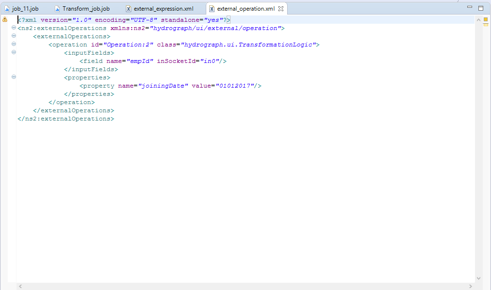

Externalizing Transformations for Partition By Expression feature enables user to externalize expression, class and output fields of Operation Editor. Its enhancing generalizing capabilities of all Transform components and providing options to user for generic job creation.
Operation Editor of transform component basically divided into four sections
- Input Fields
- Operation Control

- Input Fields container displays all available input fields for further processing.
- These are the output fields of immediate left component/data flow.
- Operation Control provides two options (i.e. Expression and Class) for data transformation.
- Operation Control provides an option to set operation class/expression internally or externally.
Expression:

- Internal Expression:
- This feature allows user to enter expression details in Operation Control manually.
- External Expression:
- This feature allows user to use external XML file (i.e. transformation file) for data transformation.
- User needs to select External Expression feature to opt for this option.
- Once selected it will enables the External Path property of Operation Control.
- External Path: It allows user to locate the external transformation file from filesystem.
- Its recommended to store all external transformations files under externalTransformFiles directory of Hydrograph project.
- It provides Import Expression and Export Expression buttons to import or export expression from external file.
- Import Expression: This option allows user to import the expression from selected external file into Operation Control section. Once imported it will automatically populates all required details i.e. input fields, output fields, expression id and expression details into Operation Control section of Operation Editor from external file.
- Export Expression: This option enables user to export the expression details from Operation Control panel into selected external file.

Class:

- Internal Operation:
- This feature allows user to enter operation class details into Operation Control manually.
- External Operation:
- This feature allows user to use external XML file (i.e. transformation file) for data transformation.
- User needs to select External Operation feature to opt for this option.
- Once selected it will enables the External Path property of Operation Control.
- External Path: It allows user to locate the external transformation file from filesystem.
- Its recommended to store all external transformations files under externalTransformFiles directory of Hydrograph project.
- It provides Import Expression and Export Expression buttons to import or export operation from external file.
- Import Expression: This option allows user to import the operation from selected external file into Operation Control section. Once imported it will automatically populates all required details i.e. input fields, output fields, operation id and operation details into Operation Control section of Operation Editor from external file.
- Export Expression: This option enables user to export the operation details from Operation Control panel into selected external file.

Import and Export Schema:
- Transform Components allows user to Import and Export Schema using external file.
- Import Schema:
- Import Schema feature provides an option to import the schema details from external file.
- Once selected it will open window to locate the external schema file from filesystem.
- Export Schema:
- Export Scheme feature allows user to export the schema details into external file.